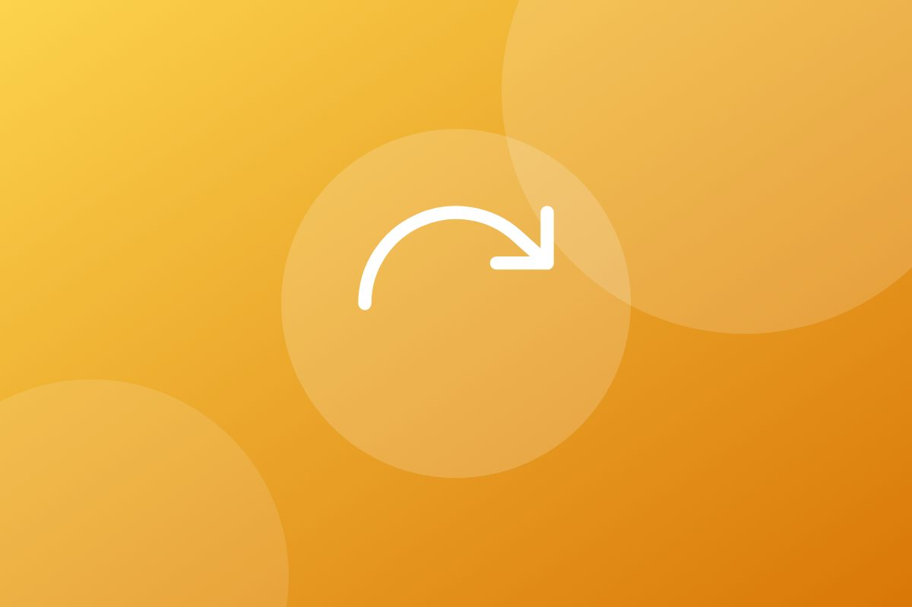

Prinsip 3R
Reduce, Reuse, Recycle: tiga langkah utama untuk mengurangi timbulan sampah sehari-hari.

01
Reduce
Mengurangi sampah dari sumbernya adalah langkah paling efektif dan paling murah.
- Bawa tas belanja, botol minum, dan wadah makan sendiri.
- Tolak sedotan serta kantong plastik sekali pakai.
- Beli produk isi ulang atau dalam kemasan besar.
- Rencanakan belanja agar tidak ada makanan terbuang.

02
Reuse
Gunakan kembali barang yang masih layak sebelum memutuskan untuk membuangnya.
- Jadikan botol dan kaleng bekas sebagai pot atau tempat alat tulis.
- Gunakan toples kaca untuk menyimpan bumbu dan makanan kering.
- Donasikan pakaian dan perabot yang masih layak pakai.
- Perbaiki barang rusak sebelum membeli yang baru.

03
Recycle
Olah sampah menjadi bahan atau produk baru agar tidak menumpuk di tempat pembuangan.
- Pilah dan bersihkan plastik, kertas, kaca, dan logam.
- Setorkan ke Bank Sampah atau pengepul terdekat.
- Pilih produk yang dibuat dari bahan daur ulang.
- Ikuti program e-waste untuk perangkat elektronik bekas.
Tips Ramah Lingkungan
Mulai dari satu kebiasaan.
Klik tombol untuk mendapatkan ide aksi hijau berikutnya.
“
Memuat tips…